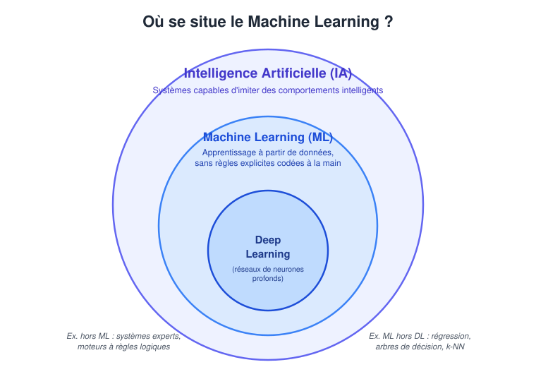
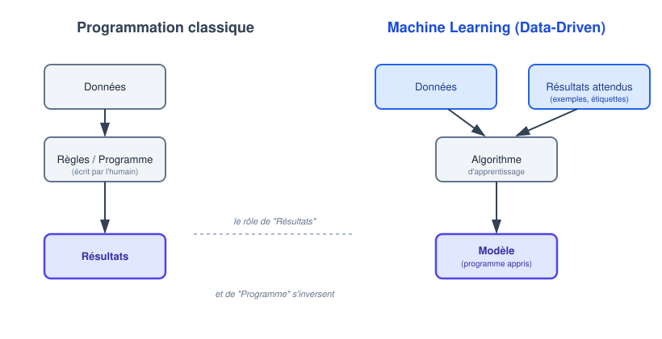
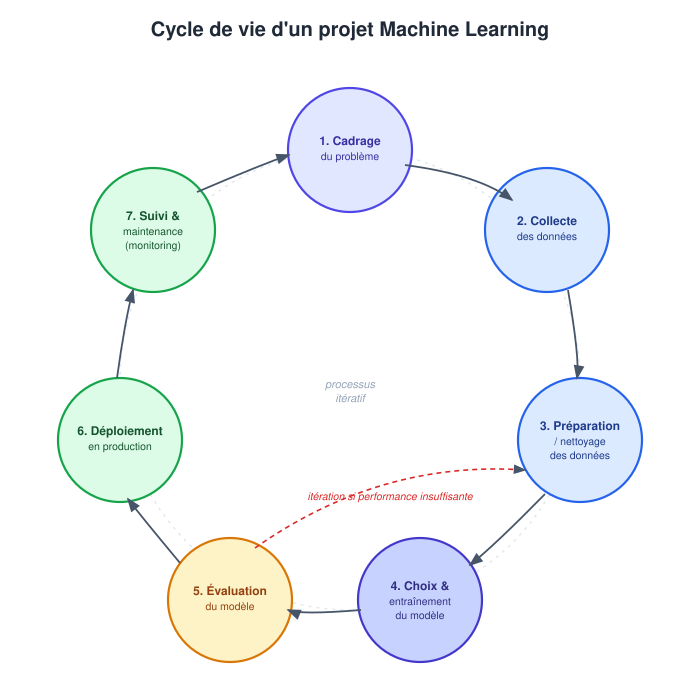

À la fin de ce chapitre introductif, l’étudiant sera capable de :
- Définir formellement le Machine Learning et le situer dans l’écosystème de l’Intelligence Artificielle ;
- Comparer le paradigme de programmation classique et l’approche guidée par les données (Data-Driven) ;
- Identifier les grandes étapes du cycle de vie d’un projet de Machine Learning ;
- Identifier les outils de base utilisés dans ce cours (Python, JupyterLab,
pandas, Scikit-Learn etuv).
1. Machine Learning
1.1. De l’Intelligence Artificielle au Machine Learning
L’Intelligence Artificielle (IA) est le champ scientifique le plus large : il regroupe l’ensemble des théories et techniques mises en œuvre pour concevoir des machines capables de simuler des comportements associés à l’intelligence humaine — raisonner, percevoir, planifier, comprendre le langage, ou encore apprendre.
Le terme Artificial Intelligence est proposé en 1956 lors de la conférence de Dartmouth. Pendant plusieurs décennies, l’IA « symbolique » domine : on cherche à reproduire l’intelligence en manipulant des symboles et des règles logiques explicites. Ce n’est qu’à partir des années 1990-2010, avec l’explosion des données disponibles et de la puissance de calcul, que le Machine Learning statistique devient l’approche dominante de l’IA.
Historiquement, les premiers systèmes d’IA reposaient sur des systèmes experts : des ensembles de règles logiques (SI ... ALORS ...) écrites explicitement par des humains. Ils fonctionnaient bien dans des domaines circonscrits, mais s’avéraient extrêmement coûteux à maintenir et incapables de s’adapter à des situations non anticipées.
Le Machine Learning (ML) constitue une rupture : plutôt que de coder explicitement toutes les règles de décision, on utilise un algorithme pour apprendre, à partir d’exemples, un modèle capable de produire des prédictions sur de nouvelles données. Le modèle ne fournit pas toujours des règles lisibles ; il représente surtout une relation mathématique entre les données d’entrée et la sortie attendue.
Le Deep Learning (Apprentissage Profond, DL) est un sous-domaine du ML qui repose sur des réseaux de neurones artificiels comportant de nombreuses couches, performants sur des données non structurées (images, son, texte).

Comme le montre la Figure 1, ces trois notions s’emboîtent comme des poupées russes : chaque cercle est un cas particulier du cercle qui l’englobe.
Tout algorithme de Deep Learning est un algorithme de Machine Learning, et tout algorithme de Machine Learning appartient au champ de l’IA — mais la réciproque est fausse (ex : un algorithme de recherche aux échecs, comme Minimax, est de l’IA sans être du ML, car il n’apprend rien à partir de données).
1.2. Définition formelle du Machine Learning
La définition de référence est celle de (Mitchell et Mitchell 1997) :
Définition 1 On dit qu’un programme informatique apprend à partir d’une expérience E, par rapport à une classe de tâches T et une mesure de performance P, si sa performance aux tâches de T, mesurée par P, s’améliore avec l’expérience E.
Cette définition se décompose en trois éléments concrets qui doivent être clairement identifiés avant de commencer tout projet. Voici son application pour un filtre anti-spam :
| Symbole | Signification | Exemple : filtre anti-spam |
|---|---|---|
T (Task) |
La tâche que le système doit accomplir | Classer un e-mail comme spam ou non-spam |
P (Performance) |
La métrique d’évaluation | Proportion d’e-mails correctement classés |
E (Experience) |
Les données d’apprentissage | Une base d’e-mails déjà étiquetés |
Reprenons ce triplet pour un second cas d’usage : un système destiné à prédire si un client va résilier son abonnement téléphonique (churn).
T: prédire, pour chaque client, s’il résiliera dans les 30 prochains jours (classification binaire) ;P: le taux de bonnes prédictions sur des clients dont on connaît déjà l’issue réelle (mesuré sur des données jamais utilisées pour l’entraînement) ;E: l’historique des abonnements passés (durée, factures, appels au service client, résiliations effectives).
Cette grille de lecture (T, P, E) est fondamentale : avant même de choisir un algorithme, tout projet ML doit répondre clairement à ces trois questions.
Le chapitre suivant détaillera en profondeur les paradigmes d’apprentissage. Retenons pour l’instant que la première distinction à connaître oppose :
- L’apprentissage supervisé, où le système dispose des « bonnes réponses » pendant l’entraînement (ex. régression, classification) ;
- L’apprentissage non-supervisé, où le système ne dispose que des données brutes, sans réponse attendue (ex. clustering).
2. Programmation classique vs. approche Data-Driven
2.1. Le paradigme classique
Dans le paradigme classique (déductif), le développeur déduit un ensemble de règles explicites, puis les traduit en code. Le programme prend des données en entrée et produit des résultats en appliquant mécaniquement ces règles.
Prenons l’exemple du filtre anti-spam codé « à la main » :
def est_spam(email: str) -> bool:
"""
Approche par règles explicites (programmation classique).
Retourne:
True si l'email contient un mot suspect,
False sinon.
"""
mots_suspects = ["gratuit", "gagner", "urgent", "viagra"]
email_minuscule = email.lower()
return any(mot in email_minuscule for mot in mots_suspects)Ce type d’approche est idéal lorsque les règles métier sont stables, peu nombreuses et bien comprises (ex. calcul d’un impôt selon un barème officiel). Mais dès que les spammeurs changent de vocabulaire, la règle doit être réécrite manuellement — le programme n’apprend rien de lui-même.
2.2. Le paradigme Data-Driven
Le Machine Learning inverse la logique : on fournit au système des données et, dans le cas supervisé, les résultats attendus correspondants. Un algorithme d’apprentissage analyse les régularités entre ces deux éléments pour produire un modèle. Ce modèle est une fonction apprise automatiquement, capable de généraliser à de nouvelles données jamais vues.
from sklearn.feature_extraction.text import TfidfVectorizer
from sklearn.linear_model import LogisticRegression
from sklearn.pipeline import make_pipeline
# Un texte doit d'abord être transformé en nombres.
modele = make_pipeline(
TfidfVectorizer(),
LogisticRegression(max_iter=1000)
)
modele.fit(X_entrainement, y_entrainement)
prediction = modele.predict([nouvel_email])Ici1, personne n’a écrit explicitement la règle « si le mot X apparaît, alors spam » : c’est l’algorithme fit() qui l’a déduite statistiquement à partir des exemples fournis.

La Figure 2 résume visuellement cette inversion : ce qui était une sortie (les résultats) dans la programmation classique devient une entrée (les résultats attendus, ou étiquettes) dans le paradigme Data-Driven.
| Critère | Programmation classique | Machine Learning |
|---|---|---|
| Fourni par l’humain | Règles + Données | Données + Résultats attendus (exemples) |
| Produit par le système | Résultats | Un modèle (règles apprises) |
| Adaptation | Faible (réécriture du code) | Élevée (réentraînement) |
| Interprétabilité | Totale | Variable selon le modèle |
| Besoin en données | Faible | Généralement élevé |
Le Machine Learning n’est pas une solution universelle. Si un problème admet une règle simple, déterministe et bien comprise (ex. conversion d’unités), la programmation classique reste souvent plus fiable, plus rapide à développer et plus facile à auditer qu’un modèle statistique.
3. Le cycle de vie d’un projet de Machine Learning
Entraîner un modèle ne représente qu’une fraction du travail réel. Un projet ML se décompose en sept étapes itératives (Géron 2022) :

- Cadrage du problème métier : traduire un besoin en problème ML via la grille (T, P, E) — voir Définition 1.
- Collecte des données : rassembler un jeu de données représentatif du phénomène à modéliser.
- Préparation et nettoyage : étape la plus chronophage (souvent 60-80 % du temps réel du projet). Traitement des valeurs manquantes, encodage des variables catégorielles, création de nouvelles variables (
feature engineering). - Modélisation : choix des algorithmes et entraînement sur les données pour minimiser une erreur.
- Évaluation : mesurer objectivement la performance sur des données jamais vues (jeu de test).
- Déploiement : intégrer le modèle dans un système opérationnel (application, API, tableau de bord).
- Monitoring : surveiller les performances en production pour détecter la dérive des données (data drift) et déclencher un réentraînement si nécessaire.
Nous allons appliquer ces sept étapes à un exemple concret : prédire les prix immobiliers à Casablanca.
- Cadrage : une agence immobilière veut estimer automatiquement le prix d’un bien à partir de ses caractéristiques (
T= régression ;P= erreur moyenne en MAD ;E= annonces passées). - Collecte : extraction de 15 000 annonces publiées sur les 3 dernières années (surface, quartier, étage, prix de vente réel).
- Préparation : suppression des annonces dupliquées, traitement des surfaces manquantes, encodage du quartier.
- Modélisation : entraînement d’une régression linéaire (chapitre 3) sur 80 % des données.
- Évaluation : mesure de l’erreur sur les 20 % restants, jamais vus pendant l’entraînement.
- Déploiement : intégration du modèle dans le simulateur de prix du site web de l’agence.
- Monitoring : si le marché immobilier casablancais évolue fortement (nouvelle infrastructure, crise économique), les prix prédits deviendront obsolètes — d’où la nécessité d’un suivi continu.
Il est essentiel de comprendre que ce cycle n’est presque jamais parcouru une seule fois de façon linéaire. Une évaluation décevante à l’étape 5 renvoie très souvent vers l’étape 3 (améliorer les variables) ou l’étape 4 (changer d’algorithme), plus rarement vers l’étape 1.
4. Python pour le Machine Learning
Pour mener à bien ce cycle, le choix du langage de programmation constitue une étape importante. L’écosystème du Machine Learning s’appuie sur plusieurs langages, chacun disposant de domaines d’utilisation et de points forts spécifiques. Parmi eux, R, largement utilisé dans les domaines de la Statistique et de l’analyse de données, Julia, conçu notamment pour le calcul scientifique et la performance numérique, ainsi que C++ et Java, qui sont également présents dans de nombreux contextes de développement logiciel et d’applications à fortes contraintes de performance ou d’intégration.
Dans le cadre de ce cycle, nous retenons Python comme langage principal. Ce choix s’explique notamment par la lisibilité de sa syntaxe, la richesse de son écosystème scientifique et sa large utilisation dans les domaines de l’analyse de données, de l’intelligence artificielle et du Machine Learning. Python permet ainsi de couvrir différentes étapes d’un projet, depuis la préparation et l’exploration des données jusqu’à l’entraînement, l’évaluation et la mise en œuvre de modèles.
4.1. Quelques bibliothèques scientifiques de l’écosystème Python
L’écosystème pythoncomprend notamment NumPy pour le calcul numérique, pandas pour la manipulation et l’analyse des données, scikit-learn pour les principales méthodes d’apprentissage automatique, ainsi que TensorFlow et PyTorch pour le développement de modèles d’apprentissage profond.
Le choix de Python présente également un intérêt pédagogique : il permet de mettre l’accent sur les concepts, les méthodes et le raisonnement propres au Machine Learning, tout en s’appuyant sur des bibliothèques largement utilisées dans la pratique. Au cours de ce cycle, nous utiliserons donc Python et cet écosystème d’outils pour illustrer progressivement les différentes étapes de la construction et de l’exploitation d’un modèle de Machine Learning.
| Bibliothèque | Rôle dans le cycle de vie du projet |
|---|---|
pandas |
Manipulation et nettoyage de tableaux de données (DataFrames). |
numpy |
Calcul numérique, calcul matriciel et opérations mathématiques optimisées. |
matplotlib / seaborn |
Visualisation et exploration visuelle des données. |
scikit-learn |
Algorithmes classiques de régression, classification, clustering et outils de prétraitement. |
Chaque bibliothèque de la Table 3 correspond typiquement à une ou plusieurs étapes du cycle de vie présenté en Figure 3 : pandas intervient surtout aux étapes 2-3, scikit-learn à l’étape 4 et matplotlib accompagne l’ensemble du processus. Les bibliothèques plus spécialisées seront laissées de côté dans ce cours introductif.
4.2. Environnements de développement : exploration et production
Il convient de distinguer la phase d’exploration et de prototypage de la phase de développement et de mise en production. Ces deux étapes peuvent mobiliser des outils différents, car leurs objectifs et leurs contraintes ne sont pas les mêmes.
Dans ce cours, nous adoptons une organisation simple et progressive : les notebooks Jupyter, notamment à travers JupyterLab et Google Colab, seront privilégiés pour l’exploration et le prototypage, tandis que Visual Studio Code (VS Code) sera utilisé pour structurer et finaliser le code destiné à la production.
Ce choix constitue une convention pédagogique propre à ce cours. Il existe naturellement d’autres environnements et plateformes, tels que DataSpell, PyCharm, Databricks et d’autres solutions, qui peuvent être pertinents selon les contextes, les projets et les habitudes de développement.
- JupyterLab
-
JupyterLab est un environnement de développement interactif permettant notamment de travailler avec des notebooks Jupyter, constitués de cellules de texte et de code pouvant être exécutées indépendamment. Il est particulièrement adapté à l’exploration d’un jeu de données, à la visualisation des résultats et à la documentation progressive du raisonnement. JupyterLab constituera l’un des principaux environnements utilisés pour les travaux pratiques de ce cours.
- Google Colab
-
Google Colab est un environnement de notebooks hébergé dans le cloud. Il permet d’exécuter du code Python sans nécessiter l’installation préalable d’un environnement de développement local et facilite le partage des notebooks. Selon les ressources disponibles et le type de compte utilisé, des ressources de calcul spécialisées, notamment des GPU, peuvent également être proposées. L’environnement d’exécution étant temporaire, les fichiers et les résultats importants doivent être sauvegardés dans un emplacement persistant.
- Visual Studio Code (VS Code)
-
Visual Studio Code est un éditeur de code généraliste que nous utiliserons pour passer du code exploratoire à une organisation plus structurée du projet. Il permet notamment de travailler avec des fichiers Python, de structurer le code en modules, de gérer les dépendances et l’environnement du projet, d’utiliser Git, d’écrire et d’exécuter des tests, puis de préparer le code pour son déploiement sous différentes formes, par exemple sous la forme d’une API ou d’un service web.
Un notebook est particulièrement adapté à l’expérimentation et à l’exploration interactive. Cependant, au fur et à mesure qu’un projet se complexifie, conserver l’ensemble du code dans un ou plusieurs notebooks peut rendre sa maintenance, sa réutilisation, ses tests et son déploiement plus difficiles. Les notebooks peuvent également conserver un état d’exécution implicite, notamment lorsque les cellules sont exécutées dans un ordre différent de celui dans lequel elles apparaissent.
Dans ce cours, nous adopterons donc une démarche progressive :
- explorer et expérimenter dans un notebook ;
- valider les choix méthodologiques et le fonctionnement du modèle ;
- consolider le code dans des fichiers Python (
.py) structurés et réutilisables ; - tester, versionner et préparer le projet pour son utilisation finale ou son déploiement.
Il ne s’agit pas d’opposer les notebooks au développement logiciel : les notebooks restent utiles pour l’exploration, l’analyse et la présentation des résultats, tandis que les fichiers Python structurés sont généralement plus adaptés lorsque le code doit être maintenu, testé et réutilisé dans un projet plus important.
4.3. Gestion de projet avec uv
Un projet de Machine Learning ne dépend pas uniquement du code que nous écrivons. Il repose également sur un environnement logiciel : une version de Python, un ensemble de bibliothèques, des versions compatibles de ces bibliothèques et différents outils nécessaires à l’exécution du projet.
La gestion de cet environnement est importante dès qu’un projet doit être reproduit, partagé, maintenu ou déployé. Deux utilisateurs disposant du même code peuvent, par exemple, rencontrer des problèmes différents si leurs versions de Python ou de certaines dépendances ne sont pas les mêmes. La gestion des dépendances constitue ainsi une composante essentielle de la reproductibilité et de la maintenance d’un projet.
Dans ce cours, nous présenterons d’abord l’approche classique de l’écosystème Python, puis nous adopterons uv comme outil de gestion de nos projets.
L’approche classique : Python, venv et pip
L’écosystème Python fournit déjà les outils nécessaires pour créer un environnement isolé et installer les bibliothèques d’un projet. Le module venv est l’outil standard de Python pour créer des environnements virtuels. Ceux-ci permettent d’isoler les dépendances d’un projet de celles installées dans les autres projets ou dans l’installation générale de Python.
L’installation des bibliothèques s’effectue généralement avec pip, l’installateur de paquets Python. Les bibliothèques sont notamment disponibles sur PyPI, le Python Package Index.
Une configuration classique peut donc être représentée de manière simplifiée par :
python -m venv .venvpuis, dans l’environnement virtuel :
python -m pip install numpy pandas scikit-learnLes dépendances peuvent ensuite être consignées dans un fichier requirements.txt, par exemple :
numpy
pandas
scikit-learnCette approche est parfaitement valable et reste largement utilisée. Le Python Packaging User Guide présente d’ailleurs cette organisation ainsi que les pratiques modernes de gestion et de distribution des projets Python.
Elle présente cependant une certaine fragmentation : la création de l’environnement, la gestion des dépendances et leur installation sont assurées par des mécanismes distincts. Pour des projets plus structurés, il devient également utile de disposer d’une déclaration centralisée des dépendances et d’un mécanisme de verrouillage permettant de conserver une résolution précise de l’environnement.
Vers une gestion moderne du projet avec pyproject.toml
Les projets Python modernes utilisent notamment le fichier pyproject.toml. Ce fichier permet de centraliser différentes informations relatives au projet, notamment ses métadonnées et ses dépendances.
Il constitue aujourd’hui un élément central de l’écosystème de packaging Python et est utilisé par de nombreux outils modernes.
Dans ce cours, nous allons nous appuyer sur uv, développé par Astral, pour gérer nos projets Python.
Pourquoi uv ?
uv est un gestionnaire de projets et de paquets Python qui regroupe dans un même outil plusieurs opérations auparavant réalisées avec différents outils. Il permet notamment de gérer les projets Python, les environnements virtuels, les versions de Python, les dépendances et leur résolution, ainsi que l’exécution des commandes dans l’environnement du projet.
La documentation officielle de uv présente notamment les fonctions suivantes :
- création d’un projet avec
uv init; - ajout et suppression de dépendances ;
- gestion de l’environnement virtuel du projet ;
- synchronisation des dépendances ;
- création et mise à jour du fichier de verrouillage ;
- exécution de commandes dans l’environnement du projet ;
- gestion de projets plus complexes au moyen de workspaces.
L’intérêt de uv dans notre cours est donc moins de remplacer une commande particulière que de fournir une organisation cohérente de l’ensemble du projet Python.
pyproject.toml, uv.lock et .venv
Avec uv, trois éléments sont particulièrement importants.
Le fichier pyproject.toml décrit le projet et ses besoins, notamment les dépendances et la version de Python requise.
Le fichier uv.lock enregistre la résolution précise des dépendances du projet. Contrairement au fichier pyproject.toml, qui exprime les besoins du projet de manière générale, le fichier de verrouillage conserve les versions effectivement résolues. Il peut ainsi être versionné avec le projet afin de faciliter la reconstruction d’un environnement cohérent sur différentes machines. La documentation officielle de uv décrit précisément le rôle de uv.lock.
Enfin, uv utilise un environnement virtuel associé au projet, généralement situé dans .venv.
On peut donc représenter schématiquement l’organisation d’un projet ainsi :
projet/
├── .venv/
├── pyproject.toml
├── uv.lock
└── ...Le principe peut être résumé ainsi :
pyproject.tomldécrit les besoins du projet ;uv.lockconserve leur résolution précise ;.venvcontient l’environnement dans lequel le projet est exécuté.
La synchronisation entre ces éléments est prise en charge par uv. La documentation officielle explique notamment que les opérations telles que uv sync et uv run peuvent mettre à jour l’environnement à partir du fichier de verrouillage.
Pourquoi uv plutôt qu’Anaconda ou Conda ?
Il existe d’autres solutions parfaitement valables pour gérer les environnements Python. L’une des plus connues est l’écosystème Conda, qui permet notamment de créer, gérer, partager et supprimer des environnements contenant différentes versions de Python et de paquets.
Notre choix de uv dans ce cours ne signifie donc pas que Conda ou Anaconda sont inadaptés. Il s’agit d’un choix pédagogique et technique correspondant à l’organisation que nous souhaitons adopter.
Nous retenons uv principalement pour les raisons suivantes :
Une approche directement centrée sur les projets Python.
uvs’intègre naturellement aux mécanismes modernes du packaging Python, notammentpyproject.tomlet l’écosystème PyPI.Une gestion unifiée du projet. Un même outil permet de gérer l’environnement, les dépendances, leur résolution, le verrouillage et l’exécution du projet.
Une structure explicite et versionnable. L’association de
pyproject.tomletuv.lockfournit une description claire du projet et de son environnement de dépendances.Une bonne adéquation avec les projets du cours. Les projets étudiés utiliseront principalement des bibliothèques de l’écosystème Python, telles que
numpy,pandas,matplotlibetscikit-learn, ainsi que les outils Jupyter.uvfournit une organisation cohérente pour leur gestion dans un projet Python local.Une continuité entre expérimentation et développement. Les étudiants pourront commencer par explorer les données et les modèles dans des notebooks, puis retrouver le même environnement de projet lorsqu’ils passeront à une organisation plus structurée du code Python.
Le choix de uv répond donc avant tout aux besoins de ce cours : disposer d’un environnement Python isolé, explicite, reproductible et facile à partager, tout en introduisant progressivement les pratiques modernes de gestion de projet.
Avant de passer au chapitre suivant, assurez-vous de pouvoir répondre « oui » aux questions suivantes :
Exercices
Les corrigés sont fournis juste après chaque énoncé, dans un bloc repliable. Essayez de répondre par écrit avant de les consulter.
Exercice 1 (Vrai ou Faux) Indiquez si chaque affirmation est vraie ou fausse, en justifiant brièvement.
- Tout système d’Intelligence Artificielle est un système de Machine Learning.
- Tout algorithme de Deep Learning est un algorithme de Machine Learning.
- Un système expert à base de règles
SI ... ALORS ...relève du Machine Learning. - Un modèle de Machine Learning peut être vu comme un « programme appris automatiquement ».
- Faux. C’est l’inverse : tout système de ML est un système d’IA, mais l’IA contient aussi des approches qui ne relèvent pas du ML (systèmes experts, algorithmes de recherche…).
- Vrai. Le Deep Learning est défini comme un sous-domaine du Machine Learning (Figure 1).
- Faux. Un système expert applique des règles écrites par un humain ; il n’apprend rien à partir de données.
- Vrai. C’est exactement la définition du paradigme Data-Driven en §2.2 : le modèle résulte de l’algorithme d’apprentissage plutôt que d’être écrit à la main.
Exercice 2 (QCM) Dans la définition de (Mitchell et Mitchell 1997) (Définition 1), que représente la lettre E ?
- L’erreur (Error) commise par le modèle
- L’expérience (Experience), c’est-à-dire les données utilisées pour apprendre
- L’ensemble (Ensemble) des hyperparamètres du modèle
- L’évaluation (Evaluation) finale du système
Réponse : 2. D’après la Table 1, E désigne l’Expérience, c’est-à-dire les données (par exemple les e-mails déjà étiquetés) à partir desquelles le système améliore sa performance P sur la tâche T.
Exercice 3 (Formuler le triplet (T, P, E)) Une chaîne de supermarchés marocaine souhaite développer un système capable de prédire, pour chaque client fidèle, le montant qu’il dépensera lors de sa prochaine visite, à partir de son historique d’achats des deux dernières années.
Formulez le triplet (T, P, E) pour ce projet.
- T : prédire le montant de la prochaine dépense d’un client donné — une tâche de régression (sortie numérique continue).
- P : une métrique de régression telle que la RMSE ou la MAE, calculée entre le montant prédit et le montant réellement dépensé sur des clients dont on connaît déjà la dépense réelle.
- E : l’historique des transactions des deux dernières années (montants, fréquence des visites, produits achetés).
Exercice 4 (Programmation classique ou Machine Learning ?) Pour chaque situation, indiquez l’approche la plus appropriée et justifiez en une phrase.
- Convertir un montant de dirhams marocains (MAD) en euros à un taux de change fixé.
- Détecter automatiquement si un commentaire posté sur un réseau social est injurieux.
- Calculer la date du dernier jour du mois, pour n’importe quel mois de l’année.
- Estimer, à partir d’une radiographie, si un patient présente une fracture osseuse.
- Programmation classique : la règle de conversion est fixe et purement arithmétique.
- Machine Learning : il n’existe pas de règle exhaustive couvrant toute la diversité linguistique et contextuelle des insultes.
- Programmation classique : le calcul obéit à des règles calendaires fixes et entièrement déterministes.
- Machine Learning : la reconnaissance de motifs visuels complexes est très difficile à coder sous forme de règles explicites — un cas typique du Deep Learning appliqué à l’imagerie médicale.
Exercice 5 (Reconstituer le schéma Data-Driven) En vous appuyant sur la Figure 2, reconstituez sous la forme A → B l’enchaînement correct des quatre éléments suivants du paradigme Machine Learning : Modèle, Données, Algorithme d’apprentissage, Résultats attendus.
Données + Résultats attendus → Algorithme d'apprentissage → ModèleLes données et les résultats attendus (étiquettes) sont fournis conjointement en entrée de l’algorithme d’apprentissage, qui produit en sortie le modèle.
Exercice 6 (Remettre les étapes dans l’ordre) Voici, dans le désordre, les sept étapes du cycle de vie d’un projet de Machine Learning :
Évaluation du modèle · Cadrage du problème métier · Monitoring · Modélisation · Préparation et nettoyage · Déploiement · Collecte des données
Remettez-les dans l’ordre correct.
- Cadrage du problème métier
- Collecte des données
- Préparation et nettoyage
- Modélisation
- Évaluation du modèle
- Déploiement
- Monitoring
Exercice 7 (Étude de cas : dérive du modèle) Une banque a déployé, en janvier, un modèle de scoring de crédit qui obtenait d’excellents résultats en test. Six mois plus tard, le modèle rejette de plus en plus de dossiers qui se révèlent être de bons payeurs.
- Comment nomme-t-on ce phénomène dans le cours ?
- À quelle(s) étape(s) du cycle de vie ce constat doit-il renvoyer l’équipe ?
- Il s’agit d’un phénomène de dérive des données (data drift) : la distribution des données réelles s’est écartée de celle des données d’entraînement.
- Ce constat relève de l’étape 7 (Monitoring), qui doit précisément détecter ce type de dérive, puis renvoie vers les étapes 2-3 (nouvelles données) et 4 (réentraînement).
Exercice 8 (Outils et bibliothèques)
- Associez chaque bibliothèque à son rôle principal :
pandas,scikit-learn,numpy. Rôles : (i) modélisation classique (régression/classification) ; (ii) manipulation de tableaux de données ; (iii) calcul numérique et matriciel. - Un étudiant veut explorer rapidement un nouveau jeu de données et visualiser quelques graphiques avant de structurer un vrai projet. Quel outil de la section 4.2. Environnements de développement : exploration et production lui conseillez-vous, et pourquoi ?
pandas→ (ii) ;scikit-learn→ (i) ;numpy→ (iii).- JupyterLab (ou Google Colab pour éviter toute installation) : ces outils sont conçus pour l’exploration rapide et itérative, avec affichage immédiat des graphiques cellule par cellule — contrairement à VS Code, davantage orienté vers la structuration d’un projet en production.
Nous allons détailler et comprendre cette structure ainsi que l’algorithme utilisé dans les chapitres suivants.↩︎